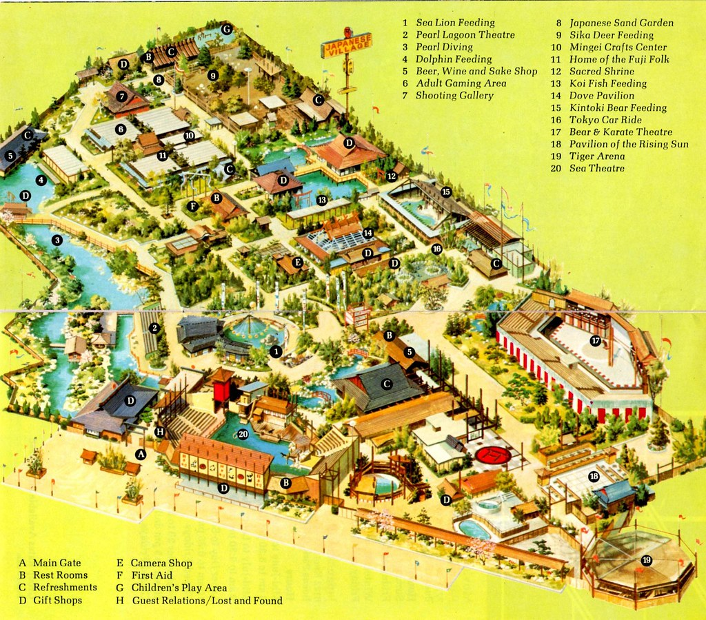
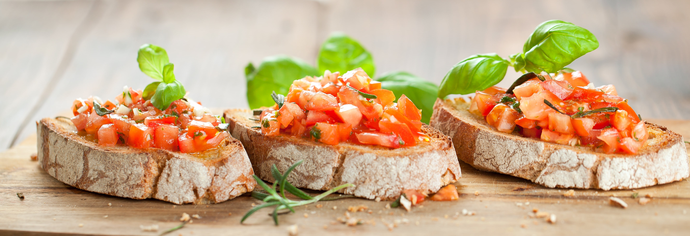
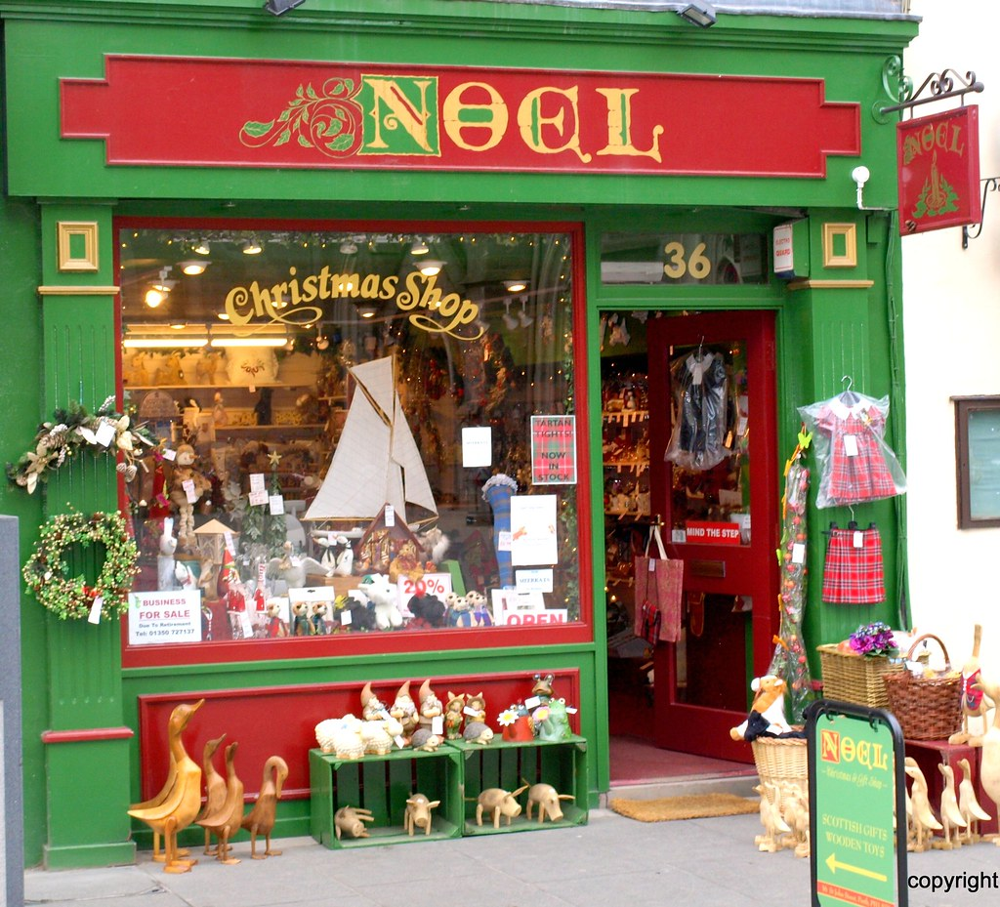

MAP
ATTRACTIONS

An amusement park is a park that features various attractions, such as rides and games, as well as other events for entertainment purposes. A theme park is a type of amusement park that bases its structures and attractions around a central theme, often featuring multiple areas with different themes. Unlike temporary and mobile funfairs and carnivals, amusement parks are stationary and built for long-lasting operation. They are more elaborate than city parks and playgrounds, usually providing attractions that cater to a variety of age groups. While amusement parks often contain themed areas, theme parks place a heavier focus with more intricately-designed themes that revolve around a particular subject or group of subjects.
AQUARIUM
The aquarium principle was fully developed in 1850 by the chemist Robert Warington, who explained that plants added to water in a container would give off enough oxygen to support animals, so long as the numbers of animals did not grow too large. The aquarium craze was launched in early Victorian England by Gosse, who created and stocked the first public aquarium at the London Zoo in 1853, and published the first manual, The Aquarium: An Unveiling of the Wonders of the Deep Sea in 1854. Small aquariums are kept in the home by hobbyists. There are large public aquariums in many cities. Public aquariums keep fish and other aquatic animals in large tanks. A large aquarium may have otters, turtles, dolphins, sharks, and whales. Most aquarium tanks also have plants.
WATER SPLASH RIDE
An AquaLoop is launched from a 17-metre (56 ft) platform. A single rider is loaded into a launch chamber where they stand with their hands across their chest. After a countdown, a trapdoor opens and the rider immediately drops 16 metres (52 ft) inside a near vertical slide. The rider accelerates to 60 kilometres per hour (37 mph) in just 2 seconds before entering the loop element. This element is a variation of the traditional vertical loop because it lies on an angle of approximately 45°. This variation of a loop is called an inclined loop. The 165-metre (541 ft) slide is over within 7 seconds.

ROLLER COASTER
A roller coaster is a type of amusement ride that employs a form of elevated railroad track designed with tight turns, steep slopes, and sometimes inversions. People ride along the track in open cars, and the rides are often found in amusement parks and theme parks around the world. LaMarcus Adna Thompson obtained one of the first known patents for a roller coaster design in 1885, related to the Switchback Railway that opened a year earlier at Coney Island. The track in a coaster design does not necessarily have to be a complete circuit, as shuttle roller coasters demonstrate. Most roller coasters have multiple cars in which passengers sit and are restrained.
LOG FLUME
Log flumes (colloquially known as log rides) are amusement rides consisting of a water flume and artificial hollow logs or boats. Passengers sit in the logs, which are propelled along the flume by the flow of water.
The ride usually culminates with a rapid descent and splashdown into a body of water, which may happen more than once (normally the largest drop being just before the end). It provides people with an entertaining way to get wet and cool off on a hot summer day, with certain seating sections usually being splashed with more water for a more fun and wet ride.

DROP TOWER
A drop tower or big drop is a type of amusement ride incorporating a central structure or tower. Drop towers vary in height, passenger capacity, lift type, and brake type. Many are custom-made, although there are some mass-produced designs. Riders experience free-fall initially, followed by rapid heavy deceleration.
PENDULUM RIDE
Pendulum rides are amusement rides based on the motion of a fixed pendulum. The configuration of the ride consists of a gondola, arm, and an axle. One end of the arm is fitted with a passenger-carrying gondola, while the other is attached to the axle. On some models, the arm extends beyond the axle and is fitted with a heavy counterweight. The counterweight is often used when the gondola swings through an inversion. In addition to swinging back and forth, some designs incorporate rotating gondolas and may send riders through a complete inversion. Pendulum rides are propelled by one of two methods: a series of DC motors driving the axle, or wheels at the base of the station pushing the gondola as it swings by.

HIKE AROUND THE PARK
Hiking is a long, vigorous walk, usually on trails or footpaths in the countryside. Walking for pleasure developed in Europe during the eighteenth century. Religious pilgrimages have existed much longer but they involve walking long distances for a spiritual purpose associated with specific religions.
ROCK CLIMBING
Rock climbing is a sport in which participants climb up, down or across natural rock formations or artificial rock walls. The goal is to reach the summit of a formation or the endpoint of a usually pre-defined route without falling. Rock climbing is a physically and mentally demanding sport, one that often tests a climber's strength, endurance, agility and balance along with mental control. Knowledge of proper climbing techniques and the use of specialized climbing equipment is crucial for the safe completion of routes.

CABLE CARS
A cable car, is a means of cable transport in which cabins, cars, gondolas, or open chairs are hauled above the ground by means of one or more cables. Aerial lift systems are frequently employed in a mountainous territory where roads are relatively difficult to build and use, and have seen extensive use in mining. Aerial lift systems are relatively easy to move and have been used to cross rivers and ravines. In more recent times, the cost-effectiveness and flexibility of aerial lifts have seen an increase of gondola lift being integrated into urban public transport systems.
HOTEL

A hotel is an establishment that provides paid lodging on a short-term basis. Facilities provided inside a hotel room may range from a modest-quality mattress in a small room to large suites with bigger, higher-quality beds, a dresser, a refrigerator and other kitchen facilities, upholstered chairs, a flat screen television, and en-suite bathrooms.
RESTAURANTS
A restaurant is a business that prepares and serves food and drinks to customers.[1] Meals are generally served and eaten on the premises, but many restaurants also offer take-out and food delivery services. Restaurants vary greatly in appearance and offerings, including a wide variety of cuisines and service models ranging from inexpensive fast food restaurants and cafeterias, to mid-priced family restaurants, to high-priced luxury establishments.
SHOPS
Shopping is an activity in which a customer browses the available goods or services presented by one or more retailers with the potential intent to purchase a suitable selection of them. A typology of shopper types has been developed by scholars which identifies one group of shoppers as recreational shoppers, that is, those who enjoy shopping and view it as a leisure activity.